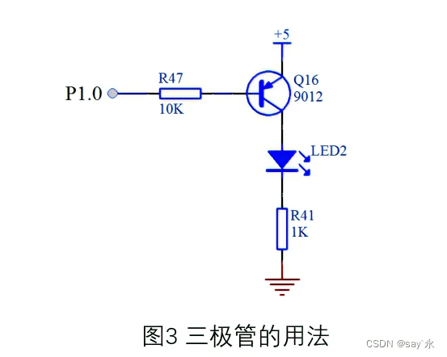
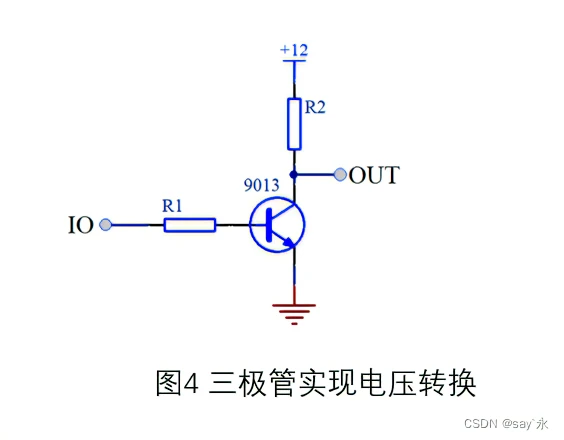
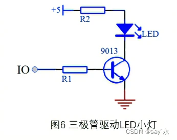

STM32F407 Learning Note 3
二极管在数字电路中的应用
Reprint : 二极管的所有基础知识点
早期的二极管
早期的二极管包含“猫须晶体”(Cat’s Whisker Crystals)和真空管(ThermionicValves)。
1904年，英国物理学家弗莱明根据“爱迪生效应”发明了世界上第一只电子二极管——真空电子二极管。它是依靠阴极热发射电子到阳极实现导通。

电源正负极接反则不能导电，它是一种能够单向传导电流的电子器件。早期电子二极管存在体积大、需预热、功耗大、易破碎等问题，促使了晶体二极管的发明。
晶体二极管
介绍
又称半导体二极管。1947年，美国人发明。在半导体二极管内部有一个PN结和两个引出端。

这种电子器件按照外加电压的方向，具备**单向电流的传导性**。现今最普遍的二极管大多是使用半导体材料如**硅**或**锗**。
结构
晶体二极管的核心是PN结
- 本征半导体：指不含任何掺杂元素的半导体，如纯硅晶片或纯锗晶片
- P型半导体：掺杂了产生空穴的含较低电价杂质的半导体，如在本征半导体中Si(4+)中掺入Al(3+)的半导体
- N型半导体：掺杂了产生电子的含较高电价杂质的半导体，如在本征半导体中硅Si(4+)中掺入磷P(5+)的半导体
由P型半导体和N型半导体相接触时，就产生一个独特的PN结界面，在界面的两侧形成空间电荷层，构成自建电场。

当外加电压等于零时，由于PN结两边载流子的浓度差引起扩散电流和由自建电场引起的漂移电流相等而处于电平衡状态，这也是常态下的PN结。
以PN结为核心结构，加上引线或引脚形成单向导电的二极管。

当外加电压方向由P极指向N极时，导通。
特性
二极管的伏安特性曲线如下：

外加电压Uw方向为P→N时，Uw大于起动电压，二极管导通；
外加电压Uw方向为N→P时，Uw大于反向击穿电压，二极管击穿。
性能参数
最大整流电流Idm：二极管连续工作允许通过的最大正向电流；电流过大，二极管会因过热烧毁；大电流整流可加装散热片。
最大反向电压Urm：Urm一般小于反向击穿电压，选规格以Urm为准，并留有余量；过电压易损坏二极管。
反向饱和电流Is：二极管外加反向电压时的电流值；Is反向击穿前很小，变化也很小；Is会随温度的升高而升高，一般地，常温下硅管Is<1μA，锗管Is=30~300μA。
最高工作频率Fm：指二极管能保持良好工作特性的最高工作频率。
三极管在数字电路中的应用
Reprint : 三极管在数字电路中的应用
初步认识
三极管是一种常见的控制和驱动的器件
常用的三极管根据材料可以分为 硅管和锗管，两者原理相同，压降略有不同，前者用的比较普遍，而锗管应用较少，于是本文将使用硅管的参数进行阐述。三极管有两种类型：PNP型和NPN型，如下图，

三极管一共有三个极，从图来看，横向左侧的引脚叫做基极b(base)，中间有个箭头，一头连着基极，一头连着发射极e(emitter),最后一个引脚则是集电极c(collector)。
三极管的原理
三极管拥有三种工作模式：截至，放大，饱和
放大模式主要应用于模拟电路中，且用法和计算方法也比较复杂，我们暂时用不到。数字电路中主要使用的是三极管的开关特性，即只用到了截至和饱和两种状态。
用法特点：
- PNP:
- e极只要高于b极0.7V以上，e极和c极导通
- NPN：
- b极只要高于e极0.7V以上，e极和c极导通
- 结论：
- 只要箭头的尾端高于箭头的头端0.7v即可接通e极和c极
- PNP:
饱和状态
条件：
b极电流大于e极和c极之间的电流除以一个放大倍数$\beta$对于放大倍数$\beta$，对于常用的三极管打开可以认为是100， 这时候就要调整基极的阻流电阻来调整。
但是电阻值也不能太小，不然电流过大用以烧坏三极管
三极管的应用
三极管在数字电路里的开关特性，最常见的应用有两个：控制应用和驱动应用
控制：
  图三中，三极管基极通过一个10K的电阻接到了单片机的一个IO口上，假定是P1.0,发射级直接接到5V的电源上，集电极接了一个LED小灯，并且串联了一个1K的限流电阻最终接到了电源负极GND上。如果P1.0由我们的程序给一个高电平1，那么基极b和发射极e都是5v，也就是说e到b不会产生一个0.7V的压降，这个时候发射极和集电极也就不会导通，那么这个电路在三极管处是断开的，没有电流通过，LED2小灯也不会亮。如果程序给P1.0一个低电平，这时e极还是5V，于是e和b之间产生了压差，三极管e和b之间也就导通了，三极管e和b之间大概有0.7V的压降，那么还有(5-0.7)V的电压会在电阻R47上。这个时候e和c之间也就导通了，那么LED小灯本身有2V的压降，三极管本身e和c之间大概有0.2V的压降，我们忽略不计。那么在R41上就会有大概3V的压降，可以计算出来。这条支路的电流大概是3mA,可以成功点亮LED灯 图4中，当IO口输出高电平为5V时，三极管导通，OUT输出低电平0V,当IO口输出低电平时，三极管截至，OUT则由上拉电阻R2的作用而输出12V的高电平，这样就实现了低电压控制高电压的工作原理 驱动
单片机的IO口可以输出一个高电平，但是它的输出电流却很有限，普通IO口输出高电平的时候，大概只有几十到几百uA的电流，达不到1mA，也就点不亮这个LED小灯或者是亮度很低，这个时候如果我们想用高电平点亮LED，就可以用上三极管来处理了，我们板上这种三极管型号可以通过500mA的电流，有的三极管通过的电流还更大一些，如图6所示，当IO口是高电平，三极管导通，因为三极管的电流放大作用，c极电流就可以达到mA以上了，就可以成功点亮LED小灯。
STM32F407 Learning Note 3